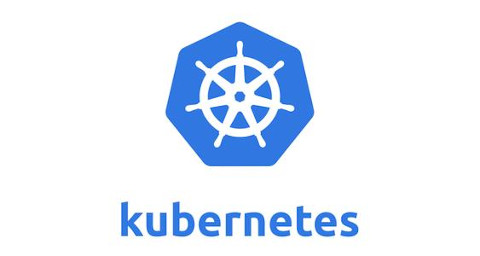

K8S网络通信
1. K8S网络模型
Kubernetes 的网络模型假定了所有 Pod 都在一个可以直接连通的扁平的网络空间中，Kubernetes的扁平化是指所有的 Pod 都可以通过对方的 IP “直接到达”（其实有很多转换机制，如Flannel）。这在GCE（Google Compute Engine）里面是现成的网络模型，Kubernetes 假定这个网络已经存在。而在私有云里搭建 Kubernetes 集群，就不能假定这个网络已经存在了。我们需要自己实现这个网络假设，将不同节点上的 Docker 容器之间的互相访问先打通，然后运行 Kubernetes。Flannel 可以实现这个扁平化的网络空间。
第一种通信模式：同一个 Pod 的多个容器之间的访问通过 lo。同一个 Pod 内的多个容器公用 pause 容器的网络栈，这些容器之间的访问走的是这个网络栈的 IO，不需要网卡，通过 localhost 的方式访问。第二种通信模式：Pod 与 Service 之间的通讯。Pod 与 Service 之间的通讯是通过各节点的 Iptables 规则，最新版本中已经加入了LVS的机制来实现转换，转换效率会更高。第三种通信模式：各 Pod 之间的通讯。各 Pod 之间的通讯采用 Overlay Network，即全覆盖网络。
2. K8S网络解决方案
Flannel 是 CoreOS 团队针对Kubernetes 设计的一个网络规划服务，符合 CRI，即容器运行时接口。简单来说，它的功能是让 集群中的不同节点主机创建的 Docker 容器都具有全集群唯一的虚拟IP地址。而且它还能在这些IP 地址之间建立一个覆盖网络（Overlay Network）。通过这个覆盖网络，将数据包原封不动地传递到目标容器内。Docker 容器的 IP 唯一是容易解决的，需要修改 Docker0 分配的网段，那么容器的 IP 就是不一样。Docker 中不同容器之间的访问是比较难实现的，可以看下 Flannel 是如何解决的。

真实 Node 服务器上会安装一个 Flanneld 的守护进程，这个进程会监听一个端口，这个端口用于后期转发和接收数据包。Flanneld 启动之后会开启网桥 Flannel0，Flannel0 专门收集 Docker0 转发出来的数据报文。Docker0会分配自己的IP到对应的Pod上。如果是同一台主机的不同 Pod 之间访问走的是 Docker0 的网桥。因为这些 Pod 都是在在同一个网桥下面的子网中，是可以走 Docker0 的网桥。图示如下：

跨主机 通过对方的IP访问对方，比如 Web app02 访问 Backend，10.1.15.2/24 和 10.1.20.3/24 不是同一个网段。Web app02 把数据报文发送到投入它的网关 Docker0，Docker0 中会有对应的钩子函数把数据包抓取到 Flannel0，这里还会有很多 从 ETCD 中获取的路由表记录被写入到主机，用来判断路由到哪台机器。
Flannel0 是 Flanneld 开启的网桥，所以 数据包会到 Flanneld，Flanneld 会对数据报文进行解封装，目标写的是 192.168.66.2（图上的错了）。Flanneld 使用的是 udb 来转发数据包，因为局域网内更快。Payload 是外部数据包实体，解封装之后数据包被转发到目标Node主机。目标端口是 Flanneld 的端口，所以这个 数据包会被Flanneld所截获，然后拆分数据包，再转发到 Flannel0，Flannel0 转发到 Docker0，Docker0 分配到 Backend Pod。这里是经过二次解封的，第一层信息 Docker0 是看不到的，只能看到第二层。这样就可以实现跨主机的扁平化网络。图示如下：

另外，Flannel 和 ETCD 之间有哪些关联。第一点：存储管理 Flannel 可分配的 IP 地址段的资源，Flannel 在启动的时候会向 ETCD 中插入可以被分配的网段，并且记录把哪个网段分配到哪些机器上，防止已经分配的网段再被Flannel利用，分配到其它的Node节点。第二点：监控 ETCD 中每个 Pod 的实际地址，并在内存中建立维护 Pod 节点路由表。可以利用这个路由表判断 Pod 对应的主机地址是(192.168.66.2)。
3. K8S网络通信方式
同一个 Pod 内部通讯：同一个Pod 共享同一个网络命名空间，共享同一个Linux 协议栈，使用的是 lo，即回环网卡。
两个Pod之间的访问：① Pod1 与 Pod2 不在同一台主机，Pod 的地址是与 docker0 在同一个网段的，但docker0网段与宿主机网卡是两个完全不同的IP网段，并且不同Node之间的通信只能通过宿主机的物理网卡进行。将Pod的IP和所在Node的IP关联起来，通过这个关联让Pod可以互相访问；② Pod1 与 Pod2 在同一台机器，由 Docker0 网桥直接转发请求至 Pod2，不需要经过 Flannel。
Pod 至 Service 的网络：目前基于性能考虑，全部为 iptables 维护和转发，最新版是LVS转发和维护。
Pod 到外网：Pod 向外网发送请求，查找路由表, 转发数据包到宿主机的网卡，宿主网卡完成路由选择后，iptables 执行 Masquerade 把源 IP 更改为宿主网卡的 IP，然后向外网服务器发送请求。这是一种动态转换。
外网访问 Pod：通过 Service 的 NodePort 方式，虽然是扁平化网络，但这个扁平化网络是私有网络，不能够在访问到与物理机器相连网络的主机。
K8S 中三层网络，如组件通讯示意图：

真实的物理网络只有一个就是节点网络，构建服务器的时候只需要一张网卡就可以实现。Service 网络和 Pod 网络是虚拟网络，属于内网中。所有的 Pod 都会在扁平化的网络（Pod）中通信。